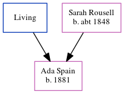

Lily Gower (née Spain) 1888 - 1953
[ Home ] | [ Calendar ] | [ Surnames Index ] | [ Errors ] | [ Family History ]The youngest of 3 children of Charles Spain (a builder's joiner) and Sarah Rousell (a lodging house keeper), Lily Spain, the second cousin twice-removed on the father's side of Nigel Horne, was born in Margate, Kent, England on 1 May 1888 and married Alfred Gower (a painter's labourer railway co with whom she had 6 children: Adelaide Sylvia, Irene Violet, Cecil, Margaret Mary, Patricia Winifred Jean and Alfred Joseph) in Wandsworth, London, England around Aug 19081.
During her life, she was living at Dane Road in Margate on 5 Apr 18913; at Edgar Road in Margate on 31 Mar 19012; and at St James Road, Camberwell, London on 2 Apr 19114.
She died on 3 Feb 1953 at 28 Princess Ann Avenue, Broadstairs, Kent, England.
Parents
- Charles
- Sarah Ann was born c. 1848
Children
- Adelaide Sylvia was born in 1909
- Irene Violet was born on 14 Jul 1911
- Cecil was born on 26 Mar 1913
- Margaret Mary was born on 22 Dec 1919
- Patricia Winifred Jean was born on 23 Feb 1922
- Alfred Joseph was born c. Jan 1929
Citations
- England & Wales Marriages 1837-2005 - Findmypast
- 1901 England, Wales & Scotland Census - Findmypast (was age 13 and the daughter of the head of the household)
- 1891 England, Wales & Scotland Census - Findmypast (was age 3 and the daughter of the head of the household)
- 1911 Census for England & Wales - Findmypast (was age 23 and the wife of the head of the household)
Media
1891 England, Wales & Scotland Census - GBC/1891/0005869844
1901 England, Wales & Scotland Census - GBC/1901/0007751528
England & Wales marriages 1837-2005 - BMD/M/1908/3/AZ/000368/338
Family Tree
Map
Generated by ged2site. Last updated on Jul 3, 2024
Known Issues
Birth date (1 May 1888) has no citations
Death date (3 Feb 1953) has no citations
5 Apr 1891: Not living with either parent in childhood when aged 2
1939 UK register information missing